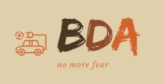

Den Bondarenko
Regional Representative, Territorial Manager, Supervisor, Sales Manager
So, if you ask, what the person I am, I tell you, that my personality is like grapefruit - so bigger and juicy like it.
My purpouses are - to make life more comfortable and easier (like Ilon Mask do))
